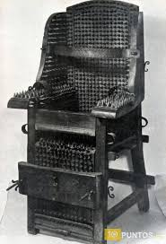
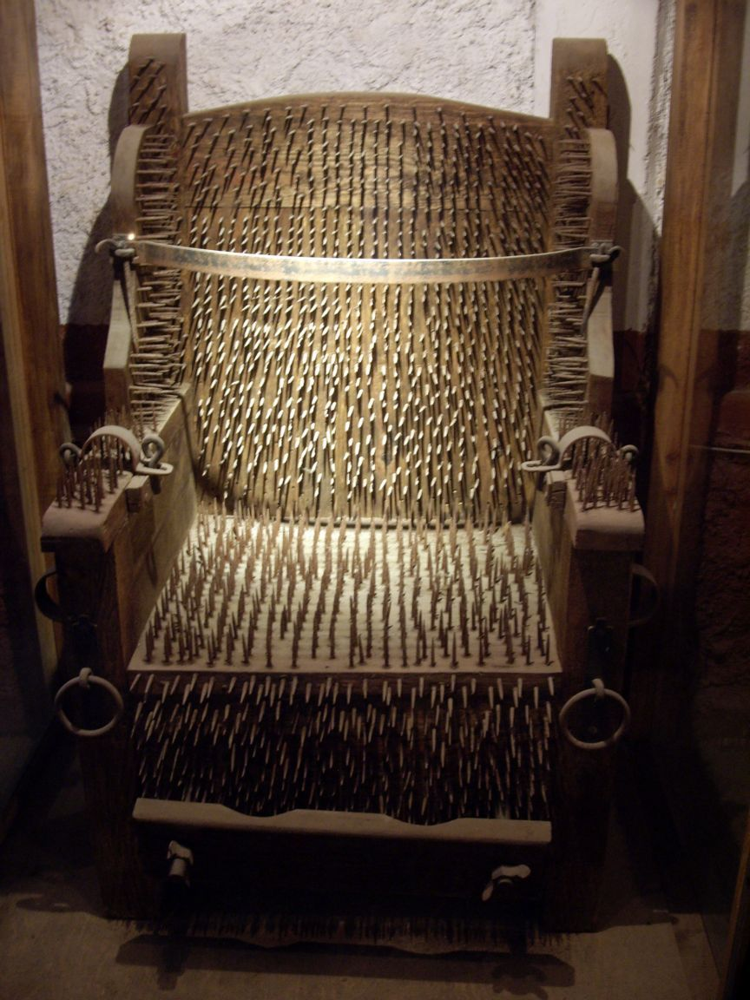
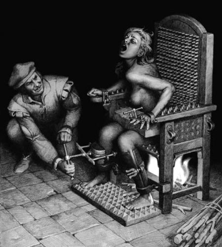

Cadira d'interrogació
Aquesta va ser una de les més populars per com es interrogava la víctima així era aquest despullada i en seure es col·locava sobre de 2000 puntes de metall. Continuava el seu sofriment quan se li lligava amb mes força per que les corretges ho estrenyien molt, el mínim que podem prendre en compte és el oxidat de les puntes on s'enterrava a l'acusat.